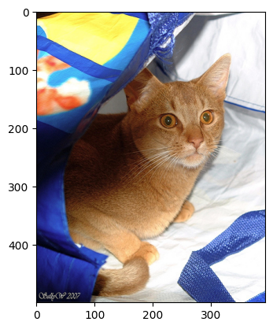
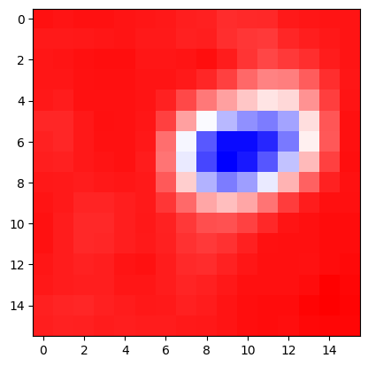
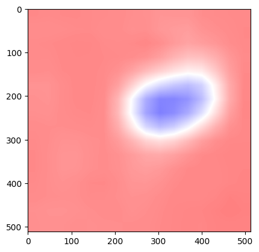
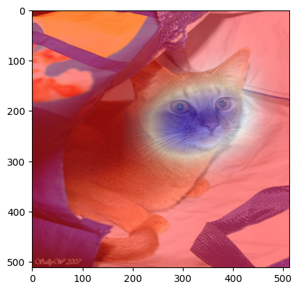
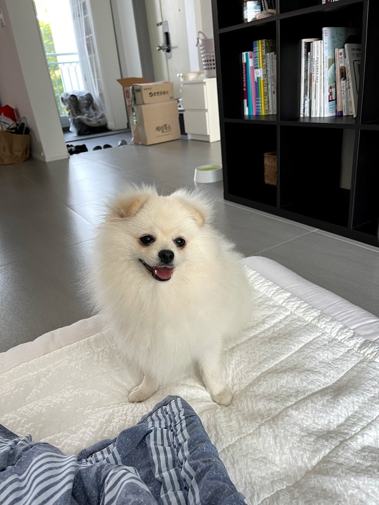
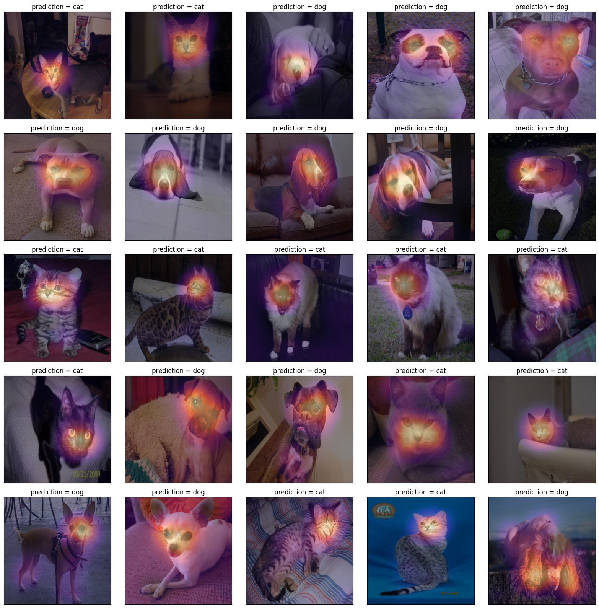
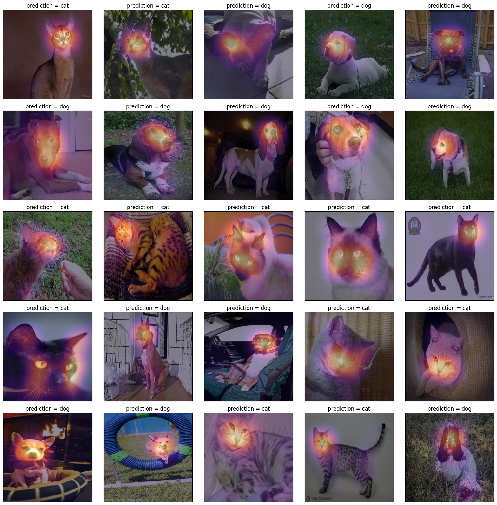
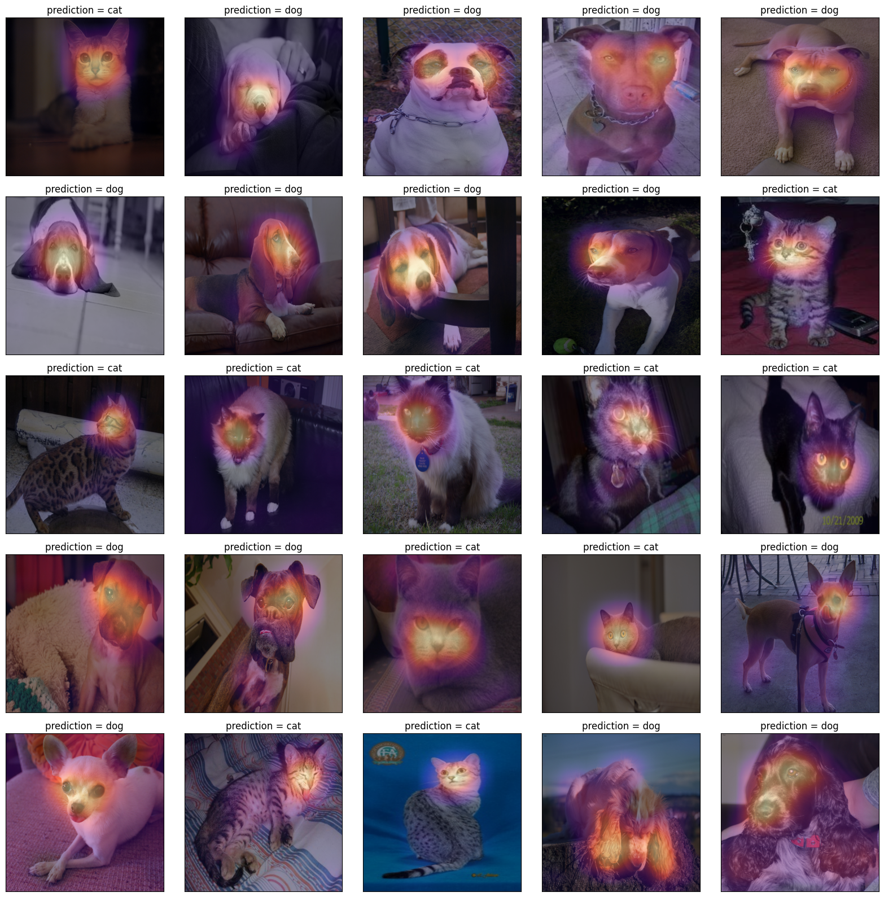
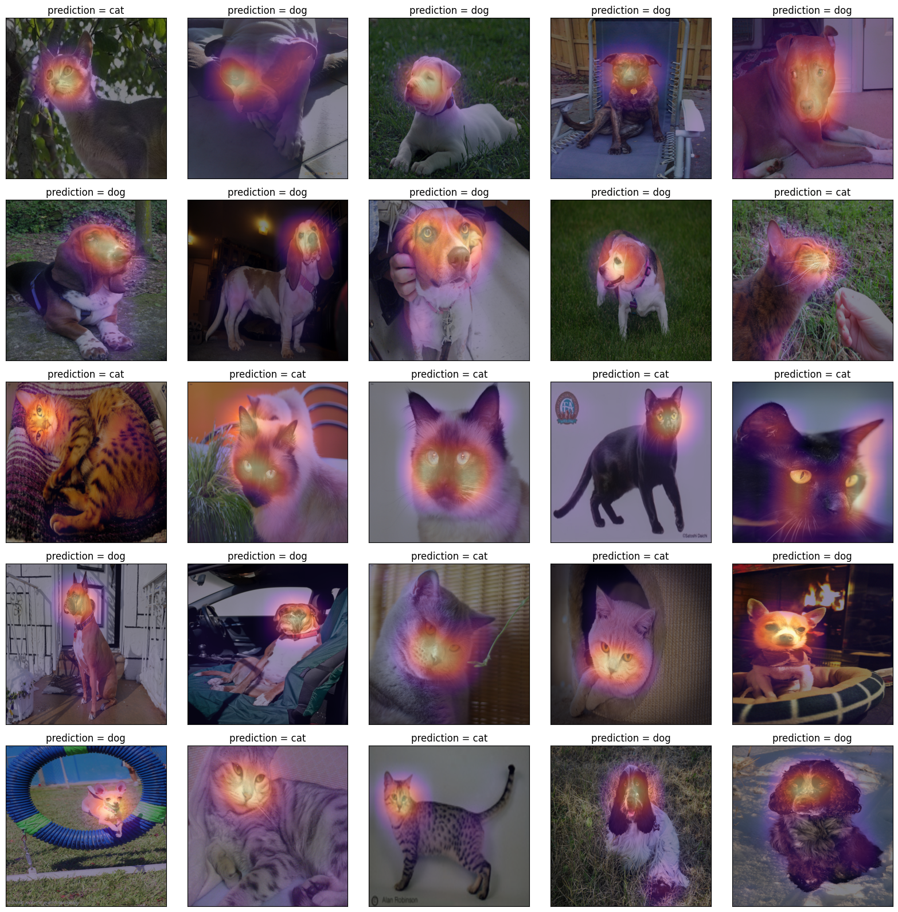

# {{<video https://youtu.be/playlist?list=PLQqh36zP38-yoX-Rtq9TPcvAawZfu6iZx&si=DD64EseytgR75zIz>}}08wk-2: (XAI) – Class Activation Map

1. 강의영상
2. Imports
import torch
import torchvision
import PIL
import requests
import io
import matplotlib.pyplot as plt3. torch.einsum
A. transpose
tsr = torch.arange(12).reshape(4,3)
tsrtensor([[ 0, 1, 2],
[ 3, 4, 5],
[ 6, 7, 8],
[ 9, 10, 11]])tsr.t()tensor([[ 0, 3, 6, 9],
[ 1, 4, 7, 10],
[ 2, 5, 8, 11]])torch.einsum('ij->ji',tsr)tensor([[ 0, 3, 6, 9],
[ 1, 4, 7, 10],
[ 2, 5, 8, 11]])B. 행렬곱
tsr1 = torch.arange(12).reshape(4,3).float()
tsr2 = torch.arange(15).reshape(3,5).float()tsr1.shapetorch.Size([4, 3])tsr2.shapetorch.Size([3, 5])tsr1 @ tsr2tensor([[ 25., 28., 31., 34., 37.],
[ 70., 82., 94., 106., 118.],
[115., 136., 157., 178., 199.],
[160., 190., 220., 250., 280.]])torch.einsum('ij,jk -> ik',tsr1,tsr2) tensor([[ 25., 28., 31., 34., 37.],
[ 70., 82., 94., 106., 118.],
[115., 136., 157., 178., 199.],
[160., 190., 220., 250., 280.]])C. img_plt vs img_pytorch
r = torch.zeros(16).reshape(4,4) + 1.0
g = torch.zeros(16).reshape(4,4)
b = torch.zeros(16).reshape(4,4)# torch를 쓰기 위해서는 이미지가 이렇게 저장되어있어야한다.
img_pytorch = torch.stack([r,g,b],axis=0).reshape(1,3,4,4)
print(img_pytorch)
print(img_pytorch.shape)tensor([[[[1., 1., 1., 1.],
[1., 1., 1., 1.],
[1., 1., 1., 1.],
[1., 1., 1., 1.]],
[[0., 0., 0., 0.],
[0., 0., 0., 0.],
[0., 0., 0., 0.],
[0., 0., 0., 0.]],
[[0., 0., 0., 0.],
[0., 0., 0., 0.],
[0., 0., 0., 0.],
[0., 0., 0., 0.]]]])
torch.Size([1, 3, 4, 4])- 첫채널, 두번째채널, 세번째채널
# matplotlib 를 쓰기 위해서는 이미지가 이렇게 저장되어있어야한다.
img_plt = torch.stack([r,g,b],axis=-1)
print(img_plt)
print(img_plt.shape)tensor([[[1., 0., 0.],
[1., 0., 0.],
[1., 0., 0.],
[1., 0., 0.]],
[[1., 0., 0.],
[1., 0., 0.],
[1., 0., 0.],
[1., 0., 0.]],
[[1., 0., 0.],
[1., 0., 0.],
[1., 0., 0.],
[1., 0., 0.]],
[[1., 0., 0.],
[1., 0., 0.],
[1., 0., 0.],
[1., 0., 0.]]])
torch.Size([4, 4, 3])- 첫row, 두번째row, 세번째row, 네번째row
만약에 img_pytorch를 matplotlib 으로 보고싶다면?
# 잘못된코드
plt.imshow(img_pytorch.reshape(4,4,3))
# 올바른코드1
plt.imshow(torch.einsum('cij -> ijc',img_pytorch.squeeze()))
# 올바른코드2
plt.imshow(img_pytorch.squeeze().permute(1,2,0))
4. 이미지 자료 처리
A. 데이터
train_dataset = torchvision.datasets.OxfordIIITPet(
root='./data',
split='trainval',
download=True,
target_types='binary-category'
)
test_dataset = torchvision.datasets.OxfordIIITPet(
root='./data',
split='test',
download=True,
target_types='binary-category'
)train_dataset[0](<PIL.Image.Image image mode=RGB size=394x500>, 0)B. 이미지 변환
- x_pil 에 resize, to_tensor 를 적용해보기
x_pil = train_dataset[0][0]
x_pil
resize = torchvision.transforms.Resize((512,512))
resize(x_pil)to_tensor = torchvision.transforms.ToTensor()
to_tensor(resize(x_pil)).shapetorch.Size([3, 512, 512])- compose로 여러변환을 묶은뒤 x_pil에 적용해보기
compose = torchvision.transforms.Compose(
[resize,to_tensor]
)compose(x_pil).shapetorch.Size([3, 512, 512])- 크기가 8인 배치를 만들어 보기
Xm = torch.stack([compose(train_dataset[i][0]) for i in range(8)],axis=0)Xm.shapetorch.Size([8, 3, 512, 512])5. AP Layer
A. AP layer
ap = torch.nn.AdaptiveAvgPool2d(output_size=1)
apAdaptiveAvgPool2d(output_size=1)X = torch.arange(1*3*4*4).reshape(1,3,4,4)*1.0
Xtensor([[[[ 0., 1., 2., 3.],
[ 4., 5., 6., 7.],
[ 8., 9., 10., 11.],
[12., 13., 14., 15.]],
[[16., 17., 18., 19.],
[20., 21., 22., 23.],
[24., 25., 26., 27.],
[28., 29., 30., 31.]],
[[32., 33., 34., 35.],
[36., 37., 38., 39.],
[40., 41., 42., 43.],
[44., 45., 46., 47.]]]])ap(X) # 채널별로 평균을 구해줌. tensor([[[[ 7.5000]],
[[23.5000]],
[[39.5000]]]])r,g,b = X[0]r.mean(), g.mean(), b.mean()(tensor(7.5000), tensor(23.5000), tensor(39.5000))ap(r), ap(g), ap(b) (tensor([[7.5000]]), tensor([[23.5000]]), tensor([[39.5000]]))B. AP, Linear의 교환
- 신기한 거 보여줄까요??
X = torch.arange(1*3*4*4).reshape(1,3,4,4)*1.0
r,g,b = X[0]ap(r)*0.1 + ap(g)*0.2 + ap(b)*0.3tensor([[17.3000]])ap(r*0.1 + g*0.2 + b*0.3)tensor([[17.3000]])- 별로 안 신기함.. 당연한것 아니야?
- torch.nn.Linear() 와 torch.nn.Flatten() 를 이용한 구현
flattn = torch.nn.Flatten()
linr = torch.nn.Linear(3,1,bias=False)# ap(r)*0.1 + ap(g)*0.2 + ap(b)*0.3
linr.weight.data = torch.tensor([[0.1, 0.2, 0.3]])
linr(flattn(ap(X)))tensor([[17.3000]], grad_fn=<MmBackward0>)#ap(r*0.1 + g*0.2 + b*0.3) ## 각각의 픽셀에 l을 취하고 그 결과에 ap를 취해야함
flattn(ap(torch.einsum('ocij,kc -> okij',X,linr.weight.data)))tensor([[17.3000]])- 정리
# 계산1: x를 ap, flatten, linear 순서로 적용
print(f"{X.shape} -- X")
print(f"{ap(X).shape} -- ap(X)")
print(f"{flattn(ap(X)).shape} -- flattn(ap(X))")
print(f"{linr(flattn(ap(X))).shape} -- linr(flattn(ap(X)))")torch.Size([1, 3, 4, 4]) -- X
torch.Size([1, 3, 1, 1]) -- ap(X)
torch.Size([1, 3]) -- flattn(ap(X))
torch.Size([1, 1]) -- linr(flattn(ap(X)))# 계산2: x를 linear, ap, flatten 순서로 적용
print(f"{X.shape} -- X")
print(f"{torch.einsum('ocij,kc -> okij',X,linr.weight.data).shape} -- l(X)")
print(f"{ap(torch.einsum('ocij,kc -> okij',X,linr.weight.data)).shape} -- ap(linr(X))")
print(f"{flatten(ap(torch.einsum('ocij,kc -> okij',X,linr.weight.data))).shape} -- flattn(ap(linr(X)))")torch.Size([1, 3, 4, 4]) -- X
torch.Size([1, 1, 4, 4]) -- l(X)
torch.Size([1, 1, 1, 1]) -- ap(linr(X))
torch.Size([1, 1]) -- flattn(ap(linr(X)))6. CAM(Zhou et al. 2016)의 구현
Zhou, Bolei, Aditya Khosla, Agata Lapedriza, Aude Oliva, and Antonio Torralba. 2016. “Learning Deep Features for Discriminative Localization.” In Proceedings of the IEEE Conference on Computer Vision and Pattern Recognition, 2921–29.
ref: https://arxiv.org/abs/1512.04150
- 이 강의노트는 위의 논문의 내용을 재구성하였음.
A. 0단계 – (X,y), (XX,yy)
train_dataset = torchvision.datasets.OxfordIIITPet(
root='./data',
split='trainval',
download=True,
target_types='binary-category',
)
test_dataset = torchvision.datasets.OxfordIIITPet(
root='./data',
split='test',
download=True,
target_types='binary-category',
)len(train_dataset), len(test_dataset)(3680, 3669)compose = torchvision.transforms.Compose([
torchvision.transforms.Resize([512,512]),
torchvision.transforms.ToTensor()
])X = torch.stack([compose(train_dataset[i][0]) for i in range(3680)],axis=0)
XX = torch.stack([compose(test_dataset[i][0]) for i in range(3669)],axis=0)y = torch.tensor([train_dataset[i][1] for i in range(3680)]).reshape(-1,1).float()
yy = torch.tensor([test_dataset[i][1] for i in range(3669)]).reshape(-1,1).float()B. 1단계 – 이미지분류 잘하는 네트워크 선택 후 학습
torch.manual_seed(43052)
#--Step1
# make (X,y), (XX,yy)
ds_train = torch.utils.data.TensorDataset(X,y)
dl_train = torch.utils.data.DataLoader(ds_train,batch_size=32,shuffle=True)
ds_test = torch.utils.data.TensorDataset(XX,yy)
dl_test = torch.utils.data.DataLoader(ds_test,batch_size=32,shuffle=True)
#--Step2
resnet18 = torchvision.models.resnet18(pretrained=True)
resnet18.fc = torch.nn.Linear(512,1)
loss_fn = torch.nn.BCEWithLogitsLoss()
optimizr = torch.optim.Adam(resnet18.parameters(),lr=1e-5)
#--Step3
resnet18.to("cuda:0")
for epoc in range(3):
resnet18.train()
for Xm,ym in dl_train:
Xm = Xm.to("cuda:0")
ym = ym.to("cuda:0")
#1
netout = resnet18(Xm)
#2
loss = loss_fn(netout,ym)
#3
loss.backward()
#4
optimizr.step()
optimizr.zero_grad()
#---#
resnet18.eval()
s = 0
for Xm,ym in dl_train:
Xm = Xm.to("cuda:0")
ym = ym.to("cuda:0")
s = s + ((resnet18(Xm).data > 0) == ym).sum().item()
acc = s/len(X)
print(f"train_accuracy = {acc:.4f}")
#--Step4
resnet18.eval()
s = 0
for Xm,ym in dl_test:
Xm = Xm.to("cuda:0")
ym = ym.to("cuda:0")
s = s + ((resnet18(Xm).data > 0) == ym).sum().item()
acc = s/len(XX)
print(f"test_accuracy = {acc:.4f}")train_accuracy = 0.9815
train_accuracy = 0.9973
train_accuracy = 0.9995
test_accuracy = 0.9951C. 2단계– Linear와 AP의 순서를 바꿈
resnet18._forward_impl??Signature: resnet18._forward_impl(x: torch.Tensor) -> torch.Tensor Docstring: <no docstring> Source: def _forward_impl(self, x: Tensor) -> Tensor: # See note [TorchScript super()] x = self.conv1(x) x = self.bn1(x) x = self.relu(x) x = self.maxpool(x) x = self.layer1(x) x = self.layer2(x) x = self.layer3(x) x = self.layer4(x) x = self.avgpool(x) x = torch.flatten(x, 1) x = self.fc(x) return x File: ~/anaconda3/envs/dl2025/lib/python3.9/site-packages/torchvision/models/resnet.py Type: method
stem = torch.nn.Sequential(
torch.nn.Sequential(
resnet18.conv1,
resnet18.bn1,
resnet18.relu,
resnet18.maxpool,
),
resnet18.layer1,
resnet18.layer2,
resnet18.layer3,
resnet18.layer4
)head = torch.nn.Sequential(
resnet18.avgpool,
torch.nn.Flatten(),
resnet18.fc
)net = torch.nn.Sequential(
stem, head
)- 1개의 observation을 고정
x = X[[0]].to("cuda:0")
net(x),resnet18(x)(tensor([[-5.5581]], device='cuda:0', grad_fn=<AddmmBackward0>),
tensor([[-5.5581]], device='cuda:0', grad_fn=<AddmmBackward0>))- 하나의 observation이 yhat까지 나오는 과정
# 계산방식1: 원래계산방식
ap = head[0]
flattn = head[1]
linr = head[2]
print(f"{x.shape} -- x")
print(f"{stem(x).shape} -- stem(x)")
print(f"{ap(stem(x)).shape} -- ap(stem(x))")
print(f"{flattn(ap(stem(x))).shape} -- flattn(ap(stem(x)))")
print(f"{linr(flattn(ap(stem(x)))).shape} -- linr(flattn(ap(stem(x))))")
linr(flattn(ap(stem(x)))), net(x)torch.Size([1, 3, 512, 512]) -- x
torch.Size([1, 512, 16, 16]) -- stem(x)
torch.Size([1, 512, 1, 1]) -- ap(stem(x))
torch.Size([1, 512]) -- flattn(ap(stem(x)))
torch.Size([1, 1]) -- linr(flattn(ap(stem(x))))(tensor([[-5.5581]], device='cuda:0', grad_fn=<AddmmBackward0>),
tensor([[-5.5581]], device='cuda:0', grad_fn=<AddmmBackward0>))전체 네트워크 \[\underset{(1,3,512,512)}{\boldsymbol x} \overset{stem}{\to} \left( \underset{(1,512,16,16)}{\tilde{\boldsymbol x}} \overset{ap}{\to} \underset{(1,512,1,1)}{{\boldsymbol \sharp}}\overset{flattn}{\to} \underset{(1,512)}{{\boldsymbol \sharp}}\overset{linr}{\to} \underset{(1,1)}{\hat{\boldsymbol y}}\right) = [[-5.5581]]\]
바꾸고 싶은 네트워크 \[\underset{(1,3,224,224)}{\boldsymbol x} \overset{stem}{\to} \left( \underset{(1,512,16,16)}{\tilde{\boldsymbol x}} \overset{\_linr}{\to} \underset{(1,2,16,16)}{{\boldsymbol \sharp}}\overset{ap}{\to} \underset{(1,1,1,1)}{{\boldsymbol \sharp}}\overset{flattn}{\to} \underset{(1,1)}{\hat{\boldsymbol y}}\right) = [[-5.5581]]\]
# 계산방식2: head의 순서를 바꾼 계산
ap = head[0]
flattn = head[1]
linr = head[2]
def _linr(xtilde):
return torch.einsum('ocij,kc -> okij', xtilde, linr.weight.data) + linr.bias.data
print(f"{x.shape} -- x")
print(f"{stem(x).shape} -- stem(x)")
print(f"{_linr(stem(x)).shape} -- _linr(stem(x))")
print(f"{ap(_linr(stem(x))).shape} -- ap(_linr(stem(x)))")
print(f"{flattn(ap(_linr(stem(x)))).shape} -- flattn(ap(_linr(stem(x)))))")
net(x), flattn(ap(_linr(stem(x))))torch.Size([1, 3, 512, 512]) -- x
torch.Size([1, 512, 16, 16]) -- stem(x)
torch.Size([1, 1, 16, 16]) -- _linr(stem(x))
torch.Size([1, 1, 1, 1]) -- ap(_linr(stem(x)))
torch.Size([1, 1]) -- flattn(ap(_linr(stem(x)))))(tensor([[-5.5581]], device='cuda:0', grad_fn=<AddmmBackward0>),
tensor([[-5.5581]], device='cuda:0', grad_fn=<ViewBackward0>))- 참고: 여기에서
_linr는 (1,512,16,16)의 each pixel에linr=torch.nn.Linear(512,1)를 수행함.
\(\star\) 잠깐 멈추고 생각 좀 해보자..
- 입력이미지
xtensor([[[[0.1451, 0.1412, 0.1373, ..., 0.9725, 0.9765, 0.9765],
[0.1373, 0.1373, 0.1412, ..., 0.9686, 0.9725, 0.9765],
[0.1373, 0.1412, 0.1451, ..., 0.9765, 0.9804, 0.9804],
...,
[0.0196, 0.0157, 0.0157, ..., 0.2588, 0.2549, 0.2706],
[0.0196, 0.0157, 0.0157, ..., 0.2275, 0.2275, 0.2510],
[0.1098, 0.1098, 0.1098, ..., 0.2431, 0.2706, 0.2980]],
[[0.0784, 0.0745, 0.0706, ..., 0.9725, 0.9725, 0.9725],
[0.0706, 0.0706, 0.0745, ..., 0.9686, 0.9686, 0.9725],
[0.0706, 0.0745, 0.0784, ..., 0.9725, 0.9765, 0.9765],
...,
[0.0235, 0.0196, 0.0196, ..., 0.4235, 0.4118, 0.4314],
[0.0157, 0.0118, 0.0118, ..., 0.3843, 0.3961, 0.4235],
[0.1059, 0.1059, 0.1059, ..., 0.3961, 0.4314, 0.4588]],
[[0.0471, 0.0431, 0.0392, ..., 0.9922, 0.9922, 0.9922],
[0.0392, 0.0392, 0.0431, ..., 0.9882, 0.9882, 0.9922],
[0.0392, 0.0431, 0.0471, ..., 0.9922, 0.9961, 0.9961],
...,
[0.0941, 0.0902, 0.0902, ..., 0.9373, 0.9059, 0.8784],
[0.0784, 0.0745, 0.0745, ..., 0.9333, 0.9255, 0.8980],
[0.1373, 0.1373, 0.1373, ..., 0.8784, 0.8980, 0.8745]]]],
device='cuda:0')- 원래 계산방식을 그대로 적용하고 결과를 해석
linr(flattn(ap(stem(x))))tensor([[-5.5581]], device='cuda:0', grad_fn=<AddmmBackward0>)- 바뀐 계산방식을 적용해볼까?
flattn(ap(_linr(stem(x))))tensor([[-5.5581]], device='cuda:0', grad_fn=<ViewBackward0>)- 좀더 파고들어서 분석해보자.
_linr(stem(x)).shapetorch.Size([1, 1, 16, 16])_linr(stem(x)).long()tensor([[[[ 0, 0, 0, 0, 0, 0, 0, 0, -1, -2, -2, -2, 0, 0,
0, 0],
[ 0, 0, 0, 0, 0, 0, 0, -1, 0, -2, -3, -4, -1, 0,
0, 0],
[ 0, 0, 0, 1, 0, 0, 0, 0, 1, 0, -3, -5, -4, -2,
0, 0],
[ 0, 0, 0, 0, 0, 0, 0, 0, -1, -4, -9, -12, -12, -8,
-2, 0],
[ 0, 0, 0, 0, 0, 0, -1, -5, -11, -16, -20, -24, -22, -14,
-4, 0],
[ -1, -1, 0, 0, 0, 0, -5, -16, -28, -35, -40, -43, -38, -23,
-7, 0],
[ -1, -1, 0, 0, 0, 0, -10, -28, -47, -56, -56, -53, -43, -25,
-7, 0],
[ 0, -1, 0, 0, 0, 0, -11, -29, -49, -57, -54, -47, -34, -19,
-4, 1],
[ 0, 0, 0, 0, 0, 0, -7, -21, -36, -43, -38, -29, -18, -8,
-1, 0],
[ 0, 0, -1, -1, 0, 0, -3, -9, -16, -19, -16, -11, -4, 0,
0, 0],
[ 0, 0, -2, -2, 0, 0, -1, -3, -6, -7, -5, -2, 0, 0,
1, 1],
[ 0, 0, -2, -1, 0, 0, -1, -3, -4, -3, -1, 0, 0, 0,
1, 1],
[ 0, 0, -1, 0, 0, 0, 0, -2, -2, -1, 0, 0, 0, 0,
1, 1],
[ 0, 0, 0, 0, 0, 0, 0, -1, -1, 0, 0, 0, 0, 1,
2, 1],
[ -1, -1, -1, -1, 0, 0, 0, -1, 0, 0, 0, 1, 1, 2,
2, 2],
[ 0, -1, -1, 0, 0, 0, 0, 0, 0, 0, 0, 1, 1, 1,
1, 1]]]], device='cuda:0')- 여러값들이 있지만 아무튼 이 값들의 평균은 -5.5581임.
- 이 값들이 작을수록 이 그림은 고양이라는 의미임
- 그런데 살펴보니 대부분의 위치에서 0에 가까운 값을 가지고, 특정 위치에서만 엄청 작은값이 있어서 -5.5581이라는 값이 나온 것임.
- 특정위치에 존재하는 엄청 작은 값들은,
x가 고양이 이미지라고 판단하는 근거가 된다.
\[\underset{(1,2,16,16)}{{\boldsymbol \sharp}:={\bf WHY}}\overset{ap}{\to} \underset{(1,2,1,1)}{{\boldsymbol \sharp}}\overset{flatten}{\to} \underset{(1,1)}{\hat{\boldsymbol y}} = [[-5.5581]]\]
D. 3단계 – WHY 시각화
- 시각화1
why = _linr(stem(x))why.shapetorch.Size([1, 1, 16, 16])plt.imshow(why.squeeze().to("cpu").detach(), cmap='bwr')
why.shapetorch.Size([1, 1, 16, 16])why_resized = torch.nn.functional.interpolate(
why,
size=(512, 512),
mode='bilinear',
align_corners=False
)plt.imshow(
why_resized.squeeze().to("cpu").detach(),
cmap="bwr",
alpha=0.5,
)
plt.imshow(x.squeeze().permute(1,2,0).cpu().detach())
plt.imshow(why_resized.squeeze().cpu().detach(),cmap="bwr",alpha=0.5)
- 시각화2
x = X[[0]].to("cuda:0")
if net(x)>0:
pred = "dog"
why = _linr(stem(x))
else:
pred = "cat"
why = - _linr(stem(x))
why_resized = torch.nn.functional.interpolate(
why,
size=(512, 512),
mode='bilinear',
align_corners=False
)
plt.imshow(x.squeeze().permute(1,2,0).cpu().detach())
plt.imshow(why_resized.squeeze().cpu().detach(),cmap="magma",alpha=0.5)
plt.title(f"prediction = {pred}");- 시각화3 – 하니를 시각화해보자.
url = 'https://github.com/guebin/DL2024/blob/main/imgs/01wk-hani1.jpeg?raw=true'
hani_pil = PIL.Image.open(io.BytesIO(requests.get(url).content))
hani_pil
x = resize(to_tensor(hani_pil)).reshape(1,3,512,512).to("cuda:0")
if net(x)>0:
pred = "dog"
why = _linr(stem(x))
else:
pred = "cat"
why = - _linr(stem(x))
why_resized = torch.nn.functional.interpolate(
why,
size=(512, 512),
mode='bilinear',
align_corners=False
)
plt.imshow(x.squeeze().permute(1,2,0).cpu().detach())
plt.imshow(why_resized.squeeze().cpu().detach(),cmap="magma",alpha=0.5)
plt.title(f"prediction = {pred}");Clipping input data to the valid range for imshow with RGB data ([0..1] for floats or [0..255] for integers). Got range [0.0..1.0000002].- 시각화4
fig,ax = plt.subplots(5,5)
#---#
k=0
for i in range(5):
for j in range(5):
x = XX[[k]].to("cuda:0")
if net(x)>0:
pred = "dog"
why = _linr(stem(x))
else:
pred = "cat"
why = - _linr(stem(x))
why_resized = torch.nn.functional.interpolate(
why,
size=(512, 512),
mode='bilinear',
align_corners=False
)
ax[i][j].imshow(x.squeeze().permute(1,2,0).cpu().detach())
ax[i][j].imshow(why_resized.squeeze().cpu().detach(),cmap="magma",alpha=0.5)
ax[i][j].set_xticks([])
ax[i][j].set_yticks([])
ax[i][j].set_title(f"prediction = {pred}");
k=k+50
fig.set_figheight(16)
fig.set_figwidth(16)
fig.tight_layout()
fig,ax = plt.subplots(5,5)
#---#
k=25
for i in range(5):
for j in range(5):
x = XX[[k]].to("cuda:0")
if net(x)>0:
pred = "dog"
why = _linr(stem(x))
else:
pred = "cat"
why = - _linr(stem(x))
why_resized = torch.nn.functional.interpolate(
why,
size=(512, 512),
mode='bilinear',
align_corners=False
)
ax[i][j].imshow(x.squeeze().permute(1,2,0).cpu().detach())
ax[i][j].imshow(why_resized.squeeze().cpu().detach(),cmap="magma",alpha=0.5)
ax[i][j].set_xticks([])
ax[i][j].set_yticks([])
ax[i][j].set_title(f"prediction = {pred}");
k=k+50
fig.set_figheight(16)
fig.set_figwidth(16)
fig.tight_layout()
fig,ax = plt.subplots(5,5)
#---#
k=50
for i in range(5):
for j in range(5):
x = XX[[k]].to("cuda:0")
if net(x)>0:
pred = "dog"
why = _linr(stem(x))
else:
pred = "cat"
why = - _linr(stem(x))
why_resized = torch.nn.functional.interpolate(
why,
size=(512, 512),
mode='bilinear',
align_corners=False
)
ax[i][j].imshow(x.squeeze().permute(1,2,0).cpu().detach())
ax[i][j].imshow(why_resized.squeeze().cpu().detach(),cmap="magma",alpha=0.5)
ax[i][j].set_xticks([])
ax[i][j].set_yticks([])
ax[i][j].set_title(f"prediction = {pred}");
k=k+50
fig.set_figheight(16)
fig.set_figwidth(16)
fig.tight_layout()
fig,ax = plt.subplots(5,5)
#---#
k=75
for i in range(5):
for j in range(5):
x = XX[[k]].to("cuda:0")
if net(x)>0:
pred = "dog"
why = _linr(stem(x))
else:
pred = "cat"
why = - _linr(stem(x))
why_resized = torch.nn.functional.interpolate(
why,
size=(512, 512),
mode='bilinear',
align_corners=False
)
ax[i][j].imshow(x.squeeze().permute(1,2,0).cpu().detach())
ax[i][j].imshow(why_resized.squeeze().cpu().detach(),cmap="magma",alpha=0.5)
ax[i][j].set_xticks([])
ax[i][j].set_yticks([])
ax[i][j].set_title(f"prediction = {pred}");
k=k+50
fig.set_figheight(16)
fig.set_figwidth(16)
fig.tight_layout()
7. CAM의 한계
- 구조의 제약이 있음
- AP 와 LINR 로 구성된 net만 가능
- 그렇지 않은 네트워크는 임의로 CAM 을 위한 구조로 만들어야함
- 이후에 등장한 grad-cam의 경우 구조의 제약없이 거의 모든 CNN에 적용가능